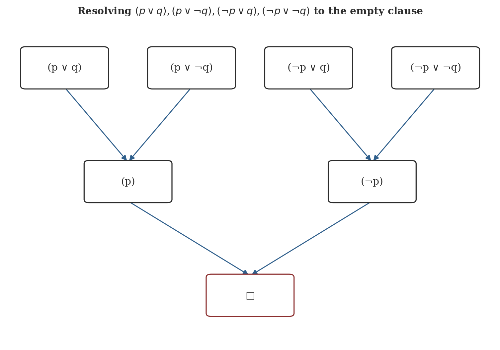
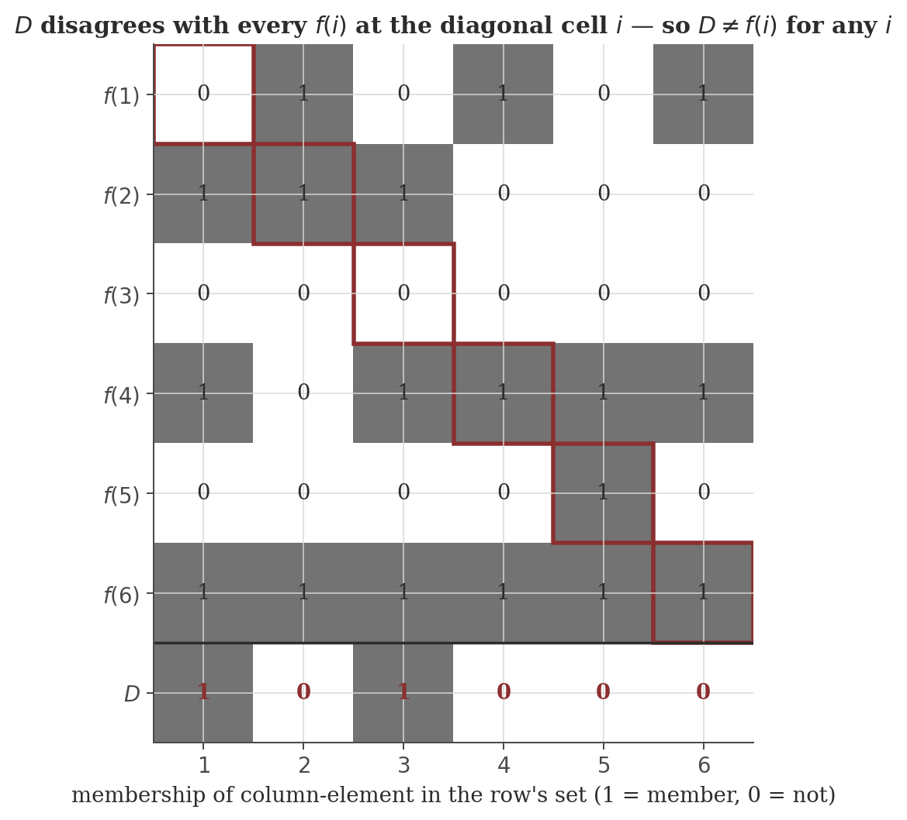

Mathematical Logic
Disclaimer: These are my personal notes compiled for my own reference and learning. They may contain errors, incomplete information, or personal interpretations. While I strive for accuracy, these notes are not peer-reviewed and should not be considered authoritative sources. Please consult official textbooks, research papers, or other reliable sources for academic or professional purposes.
Contents
- Propositional logic: syntax and semantics
- Natural deduction and soundness
- Completeness of propositional logic
- Compactness, and a graph-coloring application
- Resolution: a complete proof system for SAT
- Predicate logic, stated without proof
- Cantor's theorem and uncountability
- Computation
- Common pitfalls
- Connections
- References
1. Propositional logic: syntax and semantics
Formulas: $\varphi::=p\mid\neg\varphi\mid\varphi\land\varphi\mid\varphi\lor\varphi\mid\varphi\to\varphi$, built from atoms $p,q,r,\ldots$. A truth assignment $v$ maps atoms to $\{T,F\}$, extended recursively in the usual way. $\Gamma\models\varphi$ ("$\Gamma$ entails $\varphi$") if every $v$ satisfying every formula in $\Gamma$ also satisfies $\varphi$; $\varphi$ is a tautology ($\models\varphi$) if $\varnothing\models\varphi$.
$\models$ is a semantic notion — defined by checking truth values across every possible assignment, in principle a search over $2^n$ cases for $n$ atoms. Section 2 introduces a purely syntactic notion, $\vdash$ (derivability by explicit rules, with no reference to truth values at all), and Sections 2–3 prove the two coincide exactly — a genuinely nontrivial fact, not a matter of definition.
2. Natural deduction and soundness
$\land I$: from $\Gamma\vdash\varphi$, $\Gamma\vdash\psi$, infer $\Gamma\vdash\varphi\land\psi$. $\land E$: from $\Gamma\vdash\varphi\land\psi$, infer $\Gamma\vdash\varphi$ (or $\psi$). $\lor I$: from $\Gamma\vdash\varphi$, infer $\Gamma\vdash\varphi\lor\psi$. $\lor E$: from $\Gamma\vdash\varphi\lor\psi$, $\Gamma,\varphi\vdash\chi$, $\Gamma,\psi\vdash\chi$, infer $\Gamma\vdash\chi$. $\to I$: from $\Gamma,\varphi\vdash\psi$, infer $\Gamma\vdash\varphi\to\psi$. $\to E$ (modus ponens): from $\Gamma\vdash\varphi\to\psi$, $\Gamma\vdash\varphi$, infer $\Gamma\vdash\psi$. $\neg I$: from $\Gamma,\varphi\vdash\bot$, infer $\Gamma\vdash\neg\varphi$. $\neg E$: from $\Gamma\vdash\varphi$, $\Gamma\vdash\neg\varphi$, infer $\Gamma\vdash\bot$. $RAA$: from $\Gamma,\neg\varphi\vdash\bot$, infer $\Gamma\vdash\varphi$ (the classical rule — proof by contradiction).
$\Gamma\vdash\varphi$ means $\varphi$ is derivable from $\Gamma$ by a finite tree of applications of these rules. This is exactly the type-theoretic system of the type theory note's Section 4, one connective at a time ($\to I/\to E$ are literally that note's Abs/App rules); the one addition here is $RAA$, whose absence is precisely what makes that note's system intuitionistic rather than classical (Section 9's third pitfall there).
$\Gamma\vdash\varphi\Rightarrow\Gamma\models\varphi$.
Soundness says derivability never overshoots truth: nothing false-under-some-model is ever provable. Section 3 is the converse, and is the harder half.
3. Completeness of propositional logic
Let $\varphi$ have atoms $p_1,\ldots,p_n$ and let $v$ be any truth assignment. Write $\psi^v=\psi$ if $v(\psi)=T$, else $\psi^v=\neg\psi$. Then $p_1^v,\ldots,p_n^v\vdash\varphi^v$.
If $\models\varphi$, then $\vdash\varphi$.
For general (finite) $\Gamma$, $\Gamma\models\varphi$ reduces to the tautology case via $\models(\gamma_1\land\cdots\land\gamma_k)\to\varphi$, then $\to E$ and $\land I$ recover $\Gamma\vdash\varphi$ from $\vdash(\gamma_1\land\cdots\land\gamma_k)\to\varphi$. Soundness (Section 2) and Completeness together say $\vdash$ and $\models$ are the same relation — a purely syntactic, mechanically checkable notion of proof exactly tracks a semantic, in-principle-infinite-search notion of truth, for the whole of propositional logic.
4. Compactness, and a graph-coloring application
A (possibly infinite) set of formulas $\Gamma$ is satisfiable iff every finite subset of $\Gamma$ is satisfiable.
A graph $G$ (possibly with infinitely many vertices) is $k$-colorable iff every finite subgraph of $G$ is $k$-colorable.
This is a genuinely surprising transfer: a purely local, finite-checkable condition (every finite piece behaves) controls a global, possibly-infinite structure, via nothing but the syntactic finiteness of proofs. Chromatic number and coloring algorithms proper belong to graph theory rather than logic; this application is included here because the mechanism making it work is entirely a logic fact.
5. Resolution: a complete proof system for SAT
A clause is a disjunction of literals (an atom or its negation); a CNF formula is a conjunction of clauses. The resolution rule: from clauses $\alpha\lor p$ and $\beta\lor\neg p$, derive the resolvent $\alpha\lor\beta$. The empty clause $\square$ (derived when $\alpha,\beta$ are both empty) represents a contradiction.
Any assignment satisfying both $\alpha\lor p$ and $\beta\lor\neg p$ satisfies their resolvent $\alpha\lor\beta$.
A set of clauses is unsatisfiable iff repeated resolution eventually derives $\square$.
This variable-elimination strategy (essentially the Davis–Putnam procedure) is the direct ancestor of every modern SAT solver; Figure 1 runs it in full on a minimal unsatisfiable example, and its "resolve away one variable at a time" structure is the same proof technique as Section 3's Kalmár completeness argument, one level more operational.

6. Predicate logic, stated without proof
Extending atoms to predicates $P(x_1,\ldots,x_n)$ over a domain, with quantifiers $\forall x,\exists x$, gives first-order (predicate) logic. Its metatheory is a substantially larger undertaking than propositional logic's (the domain can be infinite, and satisfaction is defined relative to a structure rather than a finite truth table); the headline results are recorded here without proof.
For first-order logic, $\Gamma\models\varphi\iff\Gamma\vdash\varphi$ still holds, for the analogous natural-deduction-style system extended with quantifier rules.
First-order compactness holds by the same route as Section 4 (via completeness). Löwenheim–Skolem: if a first-order theory has an infinite model, it has models of every infinite cardinality — in particular, a theory intended to describe an uncountable structure (like $\mathbb R$) always also has a countable model, a genuinely counterintuitive consequence known as Skolem's paradox.
(See Enderton, 2001, Ch. 2, or Mendelson, 2015, Ch. 2, for full statements and proofs.) Gödel's incompleteness theorems are a different, later result about a much stronger system (first-order arithmetic capable of encoding its own syntax) and are not a contradiction of completeness above — completeness says provability and truth coincide for a fixed, agreed-upon proof system; incompleteness says no single such system, strong enough to talk about arithmetic, can prove every arithmetic truth, however the rules are chosen.
7. Cantor's theorem and uncountability
For any set $A$, there is no surjection $f:A\to\mathcal P(A)$.
Taking $A=\mathbb N$: $\mathcal P(\mathbb N)$ is strictly larger than $\mathbb N$, so uncountable; since $\mathcal P(\mathbb N)$ is in bijection with binary sequences, and (via binary expansion) with a set essentially equivalent in size to $\mathbb R$, this gives the uncountability of the reals by the same mechanism as the more commonly quoted digit-diagonalization argument. The construction of $D$ — an object built specifically to disagree with $f(a)$ at coordinate $a$, for every $a$ — is the identical idea behind the computability note's proof that the Halting Problem is undecidable (its Section 5) and the type theory note's $\Omega$ term: self-reference constructed precisely to contradict whatever it is being compared against.

8. Computation
The figures above are generated by logic/generate_figures.py. The snippet below reproduces the diagonal-set check and the resolution derivation.
f = {1: {2,4,6}, 2: {1,2,3}, 3: set(), 4: {1,3,4,5,6}, 5: {5}, 6: {1,2,3,4,5,6}}
n = 6
D = {i for i in range(1, n+1) if i not in f[i]}
print("D =", D)
for i in range(1, n+1):
print(f"f({i}) = {f[i]} D == f({i})? {D == f[i]}")
def resolve(c1, c2):
return [frozenset((c1 - {l}) | (c2 - {-l})) for l in c1 if -l in c2]
C1, C2, C3, C4 = frozenset({1,2}), frozenset({1,-2}), frozenset({-1,2}), frozenset({-1,-2})
C5 = resolve(C1, C2)[0]
C6 = resolve(C3, C4)[0]
C7 = resolve(C5, C6)[0]
print("C5:", set(C5), " C6:", set(C6), " C7:", set(C7), "<- empty clause")
Actual output:
D = {1, 3}
f(1) = {2, 4, 6} D == f(1)? False
f(2) = {1, 2, 3} D == f(2)? False
f(3) = set() D == f(3)? False
f(4) = {1, 3, 4, 5, 6} D == f(4)? False
f(5) = {5} D == f(5)? False
f(6) = {1, 2, 3, 4, 5, 6} D == f(6)? False
C5: {1} C6: {-1} C7: set() <- empty clauseEvery one of the six comparisons fails, exactly as the proof demands ($D$ must differ from every $f(i)$, not most); and the three-step resolution derivation lands on the empty clause exactly, a direct, checkable certificate that the original four clauses have no common satisfying assignment.
9. Common pitfalls
Dropping $RAA$ from Section 2's rule set gives intuitionistic logic — the very system underlying the type theory note's Curry-Howard correspondence — in which $\varphi\lor\neg\varphi$ is not provable for arbitrary $\varphi$. Section 3's completeness proof genuinely needs $RAA$ (in the "proof by cases" derived rule); completeness for the intuitionistic fragment is a different, separate theorem with a different proof (via Kripke models, not truth tables), not a restriction of this one.
Section 4's De Bruijn–Erdős application proves an infinite graph is $k$-colorable whenever every finite piece is — but the proof (via completeness, itself nonconstructive in general, resting on the law of excluded middle) gives no algorithm for actually producing the coloring. "Every finite subgraph is colorable" is a checkable, local condition; "the whole graph is colorable" being equivalent to it is a genuine theorem, not an obvious transfer, and the equivalence itself is where all the content lives.
Section 3 says every tautology has a proof — but propositional satisfiability checking is still NP-complete (computability note, Section 7's Cook–Levin theorem), and first-order validity (Section 6) is outright undecidable (a consequence of the computability note's Section 5, via a reduction from the Halting Problem). Completeness guarantees a proof exists somewhere in principle; it says nothing about how expensive finding one is.
Section 6's completeness theorem is about first-order logic's proof system tracking first-order semantic entailment exactly. Gödel's (unrelated, despite the shared name and author) incompleteness theorems are about a specific, much stronger theory — first-order Peano arithmetic — having true arithmetic statements no proof in that theory can derive. The first says "this proof system is exactly as strong as this semantics"; the second says "this semantics (the true statements about $\mathbb N$) is strictly stronger than any single recursively axiomatized proof system can capture." Different systems, different theorems.
10. Connections
- Type theory and functional programming. Section 2's natural deduction rules (minus $RAA$) are exactly that note's simply-typed lambda calculus typing rules (its Section 4) under the Curry-Howard correspondence (its Section 7); a propositional proof and a well-typed term are the same object.
- Computability and formal languages. Resolution refutation (Section 5) is the theoretical core of every SAT solver, and SAT itself is that note's Cook–Levin-complete problem (its Section 7); Cantor's diagonalization (Section 7 here) is the identical proof technique behind that note's undecidability of the Halting Problem (its Section 5).
- Graph theory. The De Bruijn–Erdős application (Section 4) transfers a purely logical compactness fact into a statement about chromatic number; proper graph-coloring theory, and the combinatorial (rather than logical) tools for computing chromatic number on finite graphs, belong to that subject.
11. References
- Enderton, H. B. (2001). A Mathematical Introduction to Logic (2nd ed.). Academic Press.
- Mendelson, E. (2015). Introduction to Mathematical Logic (6th ed.). CRC Press.
- van Dalen, D. (2013). Logic and Structure (5th ed.). Springer.
- Rosen, K. H. (2019). Discrete Mathematics and Its Applications (8th ed.). McGraw-Hill.